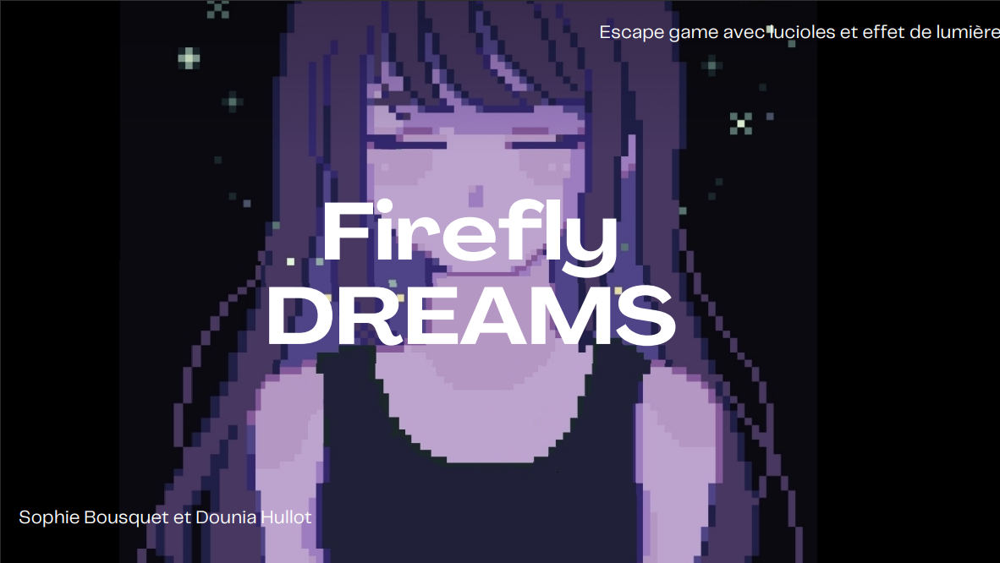
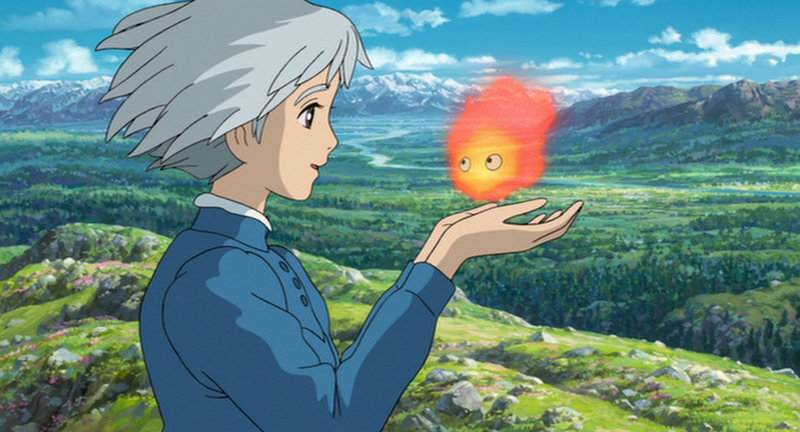

Projet
Projet godot/pixel art
Voici la création de notre jeux vidéo en visual script sur godot en binôme avec Sophie Bousquet. Vous pouvez cliquer sur la photo pour être rediriger sur mon github.

Toute la partie design et son à été faite par nous. Voici les images faite sur pixel art mais aussi la musique faite sur le logiciel logic pro.
La musique
Les cinématiques

Les fonds


Projet spécialité musique
Voici un autre projet son fais au lycée le thême etait son, bruit et language. J'ai donc opté pour le thême des films ghibli qui sont très immersif et reconnaissable par leur musique. J'ai recrée une ambiance d'un choix de trois film: Le château ambulant, princesse mononoke et le château dans le ciel. Pour cette composition j'ai utilisé des son pris sur internet (oiseau, son de nature) mais aussi des son enregistrer par moi même (porte qui s'ouvre, boîte musical...).

Projet python
Enfin, voici un projet python. C'est le jeux des petits cheveaux encore une fois vous pouvez cliquez sur la photo pour être redirigé vers le projet sur mon github(A VENIR).